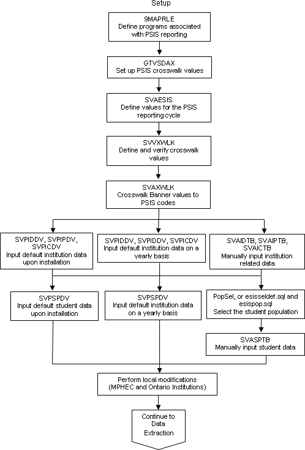
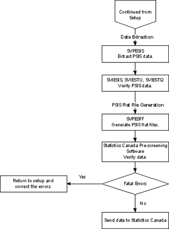

Process flow
Learn about the process flow for PSIS processing.
The process flow has three sections:
- Setup
- Data Extraction
- Flat File Generation


Banner Student › PSIS Banner Student - Use
Learn about the process flow for PSIS processing.
The process flow has three sections:

